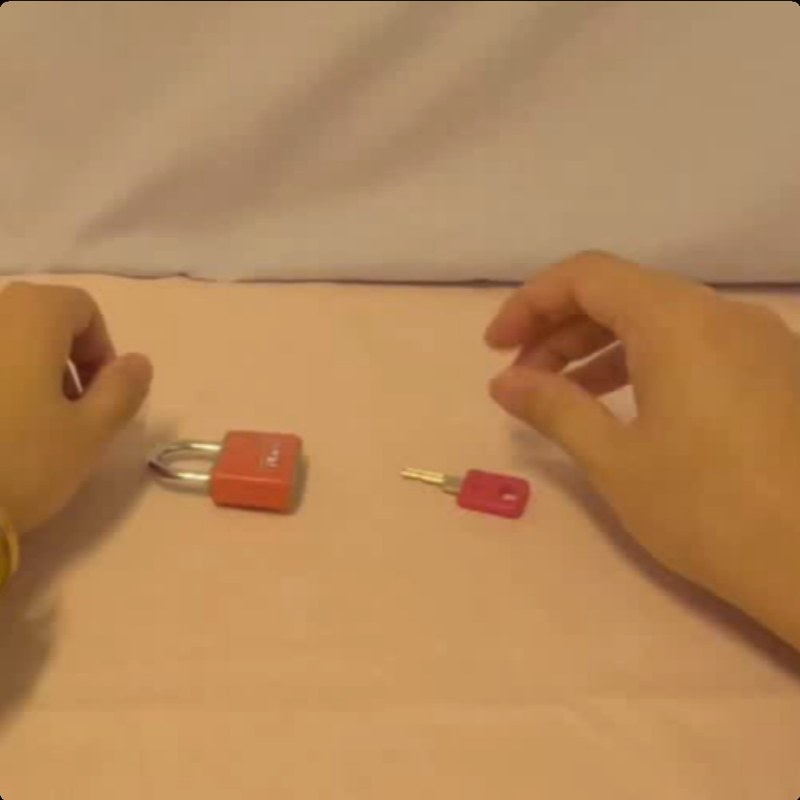
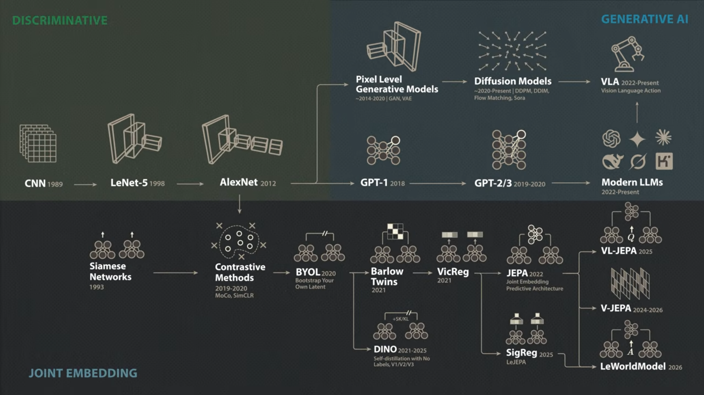
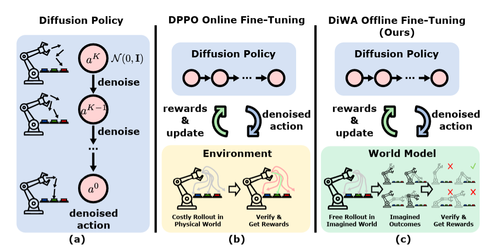
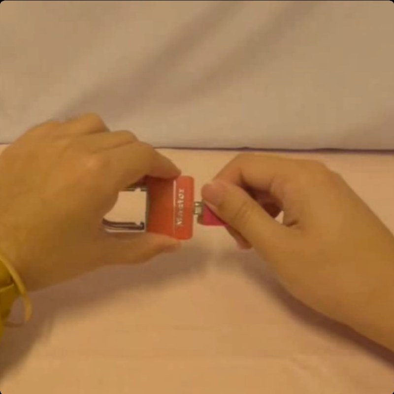

MSc Artificial Intelligence dissertation
Learning to Select Actions for Complex Hand Tasks
A comparative study of visuomotor policies and latent world models
 MSc AI Dissertation VivaViva examination
MSc AI Dissertation VivaViva examinationA comparative study of visuomotor policies and latent world models
MSc AI Dissertation Viva1 | Background | PolicyA policy is a model that learns from demonstrations (human, robot or simulated) to turn the current scene into a chunk of future actions.

MSc AI Dissertation Viva2 | The problem | SelectionWhen a suboptimal candidate is chosen, errors compound and can lead to an unsuccessful or dangerous state.
MSc AI Dissertation Viva3 | Two routes
Screenshot from Welch Labs, Yann LeCun's $1B Bet Against LLMs (2026).
MSc AI Dissertation Viva4 | Related work | DiWA
Chandra et al. (2025). (a) Imitation learning is limited by offline data. (b) DPPO finetunes with costly online interaction. (c) DiWA finetunes offline through imagined rollouts in a learned world model.
MSc AI Dissertation Viva5 | Background | World model
rates this candidate
The world model does not decide what to do. A prediction is not a decision, so a scorer must turn each predicted future into a score. A policy alone also needs a rule to pick, which is why selection is the question. Illustrative frames: the real prediction is made in a compact latent space, not in pixels.
MSc AI Dissertation Viva6 | Our approachNo rewards and no update, unlike DiWA: the policy is never retrained. Bars show the world model's score for each candidate, and the highest score is chosen. Branch 3 removes the policy's favourite so the world model must find better candidates.
MSc AI Dissertation Viva7 | Research questionCan a frozen world model, acting only as the final decision stage over candidates a policy already proposes, improve the selected motion chunk?
The policy is never retrained. Selection can sit on top of a policy that already exists.
The candidates are fixed, so any change comes from the world model's judgement and nothing else.
The world model never generates motion. It only ranks motions the policy already proposed.
MSc AI Dissertation Viva8 | Question and objectivesA controlled offline benchmark that separates the policy's preference from the world model's.
Five world-model families and two policies, under matched local training exposure.
When selection helps, and a likely explanation for each case where it does not.
MSc AI Dissertation Viva9 | MethodData is EgoDex egocentric video. Error is measured against the expert motion as translation (metres, per axis) and rotation (degrees). Branch 1 is the baseline everything is compared with.
MSc AI Dissertation Viva10 | Case study | CandidatesFour retraining attempts changed the KL weight, annealing, observation dropout and free bits. The latent was still ignored, and 7 of 12 checkpoints collapsed across seeds.
ACT results measure the world model and planner together. Diffusion Policy has no such coupling, so it carries the main claim.
MSc AI Dissertation Viva11 | Method | World models| Model | What it is | Role in this study |
|---|---|---|
| V-JEPA2-AC | Frozen video backbone pretrained on over a million hours, with an action-conditioned head trained locally | Main candidate scorer |
| DexWM | Dexterous-manipulation world model on a DINOv2 encoder | Trained at a fixed budget, one seed |
| LeWM | Compact encoder and predictor trained from scratch | Two scorer configurations |
| DINO-WM, JEPA-WM | Official checkpoints with a 7-D action interface | Validation pilot through an adapter |
| No-AC, PointWorld proxy | Same backbone with the action input removed or weakened | Controls for the mechanism |
Every locally trained model receives the same exposure of 100,000 items. Externally pretrained backbones still carry training that budget does not offset, so results are read model by model.
MSc AI Dissertation Viva12 | Result | HeadlinePooled across three training seeds, 95% CI [5.43, 6.47]. No retraining. The oracle ceiling is what a perfect ground-truth selector could remove from the same five candidates. Translation error is root-mean-square per axis.
MSc AI Dissertation Viva13 | Result | Other routesLeWM shows a 10.1% translation reduction, but its score does not predict which candidate is better (rank correlation -0.51 on the full test set). Disabling its dynamics model gives almost the same gain. It is reported as unvalidated and held out of the headline.
| Route | Outcome | Likely explanation |
|---|---|---|
| DexWM | +0.57% worse one seed | Predictor trained at a fixed budget, published checkpoint unavailable |
| DINO-WM, JEPA-WM | Latent score only | Adapter squeezes 18-D actions into a 7-D interface |
| PointWorld proxy | +0.27% not significant | Weakened action input, a control by design |
| ACT with CEMP | -0.58% small | Scorer shapes its own pool, read as a unit |
MSc AI Dissertation Viva14 | Case study | DiWA on CALVINMoves tasks by -3.1 to +6.1 points, with overlapping intervals.
Adds 14 to 40 points on every task, about an order of magnitude more.
Task success (%), four CALVIN tasks, DiWA's own checkpoints, pooled across three seeds.
MSc AI Dissertation Viva15 | InterpretationThere must be real alternatives to choose between. ACT's collapsed pool offered none until search restored it.
The scorer must see the action. Removing it gave exactly 0.00%.
Candidates must lie within what the scorer was trained on. Adapter pilots improved a latent score and not the trajectory.
DiWA's imagined-PPO finetuning meets all three conditions by construction, because its reward signal is what the policy is trained against. External selection has no such guarantee.
This is a pattern supported by the tested configurations, not a general law.
MSc AI Dissertation Viva16 | Limits and next stepsContribution in one sentence. A controlled offline benchmark and protocol showing a frozen world model can improve which of a policy's own proposed motions is chosen, for one tested pairing, without retraining and without any claim yet about real-robot success.
MSc AI Dissertation VivaThank youBackup slides follow, covering the AI-use workflow, how each method was chosen, LeWM's gate, seeds, pool size, and where selection fails.
MSc AI Dissertation VivaBackup A | AI useQueried paper sets for related work and citations, then each source was skimmed manually.
Query, draft and polish workflows, with my own review and edits.
Paper discovery and critical review of chapters against a rubric.
Wrote most of the code under my specification, then tested and audited.
Research question, benchmark design, which methods to adopt, what counted as a valid result, and every claim in the dissertation.
Separate audit passes and re-runs found real defects, including a DDIM sampler indexing error, a training-exposure undershoot, and a DiWA configuration mistake. All were fixed before reporting.
Used most in the literature review and methodology, for example to find established reference methods for handling ACT and LeWM without inventing new verification tests.
MSc AI Dissertation VivaBackup B | Method provenance| Choice | Anchor | Status |
|---|---|---|
| Policy-guided candidate search (CEMP) | Cross-entropy method, initialised from the policy output, inspired by TD-MPC2 | Adapted, not a published recipe |
| Posterior-collapse fixes for ACT | KL annealing (Fu et al.), free bits (Kingma et al.), observation dropout | All tried, all failed |
| Diffusion sampling | DDIM (Song et al.), DP-T architecture (Chi et al.) | Implemented, sampler bug fixed |
| Action-conditioned scorer | V-JEPA2-AC (Assran et al.) | Head trained locally |
| Finetuning comparison | DiWA (Chandra et al.) on CALVIN, own checkpoints | Reproduced, secondary study |
| Pool size K = 5 | No literature anchor | Compute choice, ranking stable K = 2 to 20 |
| Matched exposure 100,000 items | Compute ceiling, loss still falling | Not a convergence claim |
MSc AI Dissertation VivaBackup C | LeWM gateSpearman correlation between score margin and true translation improvement. The 512-window figure was +0.537, the full test set gave -0.51.
MSc AI Dissertation VivaBackup D | Seeds and controls| Seed 42 | Seed 43 | Seed 44 | |
|---|---|---|---|
| Baseline translation error | 0.1142 | 0.1178 | 0.1191 |
| V-JEPA2-AC, Branch 2 | -6.41% | -6.09% | -5.46% |
| V-JEPA2 without action input | 0.00% | 0.00% | 0.00% |
| PointWorld proxy | +0.50% | +0.23% | +0.07% |
| LeWM rollout (unvalidated) | -10.10% | -10.06% | -10.12% |
Three seeds are a basic robustness check, not proof of stability. DexWM is single-seed by a cost decision of roughly 121 extra GPU-hours.
MSc AI Dissertation VivaBackup E | Pool sizeMSc AI Dissertation VivaBackup F | Where selection failsWindows sorted by baseline error, K = 8, Branch 2. Translation error rises 5.81% in Q1. Confidence gating does not help, because the score gap has a correlation of -0.002 with baseline error. A state-change-targeted windowing removes most of the reversal.
MSc AI Dissertation VivaBackup G | ACT collapse| Run | KL weight | Cyclical KL | Observation dropout | Free bits | Pairwise difference |
|---|---|---|---|---|---|
| v1 | 10 | no | 0% | no | indistinguishable from zero |
| v2 | 100 | no | 0% | no | indistinguishable from zero |
| v3 | 100 | yes | 30% | no | indistinguishable from zero |
| v4 | 100 | yes | 0% | 0.5 nats/dim | indistinguishable from zero |
Collapse is seed-dependent. Under the default configuration 1 of 3 seeds collapsed, and 7 of 12 checkpoints collapsed across all configurations. EgoDex observations are informative enough that the decoder finds a loss minimum that ignores the latent. A repair would need an architectural change such as discrete latents or a diversity head.
MSc AI Dissertation VivaBackup H | Metrics and statisticsTest windows are fixed, candidate pools frozen, future-goal access blocked, and scorer support restricted to training data.
MSc AI Dissertation VivaBackup I | Test-set handlingMSc AI Dissertation VivaBackup K | ReferencesMSc AI Dissertation VivaBackup J | Objectives| Obj. | Status | Basis |
|---|---|---|
| 1 | Fully | Three-branch benchmark implemented as designed and used for every family reported |
| 2 | Partly | Local exposure matched, externally pretrained backbones carry an advantage not equalised |
| 3 | Within tested configurations | Whether and when selection helps determined for every combination, one positive, a likely explanation for each other |
Objectives 4 and 5 are in the Conclusion chapter's objective table. Every non-positive-route explanation is the study's own interpretation, not independently proven.